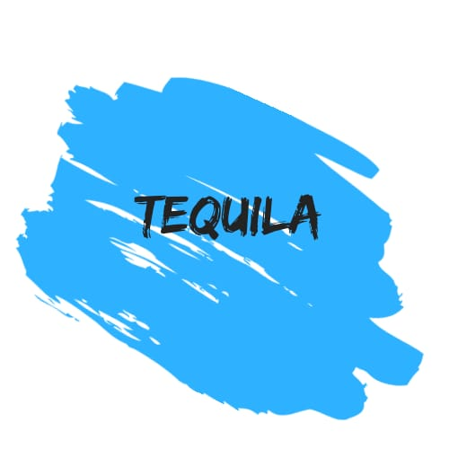
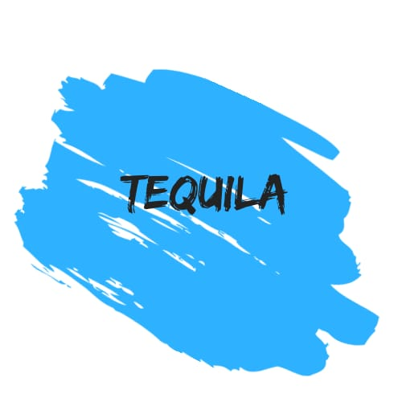

Xochimilco es una de las 16 demarcaciones de la Ciudad de México. Se localiza en el sureste de la capital mexicana, y posee una superficie de 122 km². La palabra Xochimilco es náhuatl, comúnmente traducido como "la sementera de flores" aunque la traducción más cercana es “Chinampas de Flores”. Los orígenes de Xochimilco se remontan al Período Preclásico mesoamericano cuando sus riberas e islas fueron el hogar de diversos pueblos. Al inicio del Posclásico, Xochimilco era un importante altépetl que fue sometido por los mexicas en el siglo XV. Desde entonces y hasta los años 60 del siglo XX, el territorio de Xochimilco se convirtió en uno de los proveedores de alimentos para la capital mexicana. En el territorio de Xochimilco se encuentran 14 pueblos originarios que conservan muchos rasgos de su cultura tradicional y herencia indígena, a pesar del avance de la urbanización. Además, las montañas del sur y la zona lacustre del centro forman parte de la mayor reserva natural del Distrito Federal. En contraste, la zona norte de Xochimilco está plenamente integrada a la mancha urbana de la ciudad de México, y en ella se asientan algunas zonas industriales y de servicios que constituyen parte importante de la vida económica de la delegación.